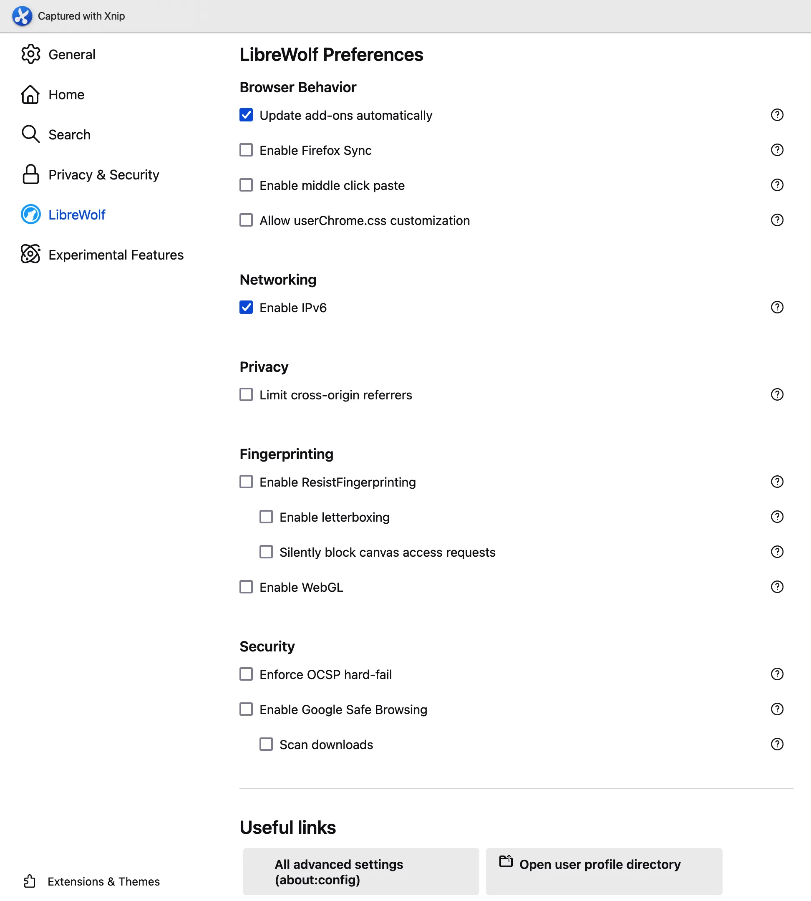
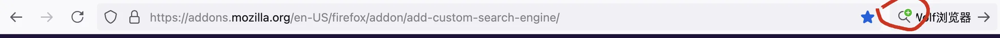
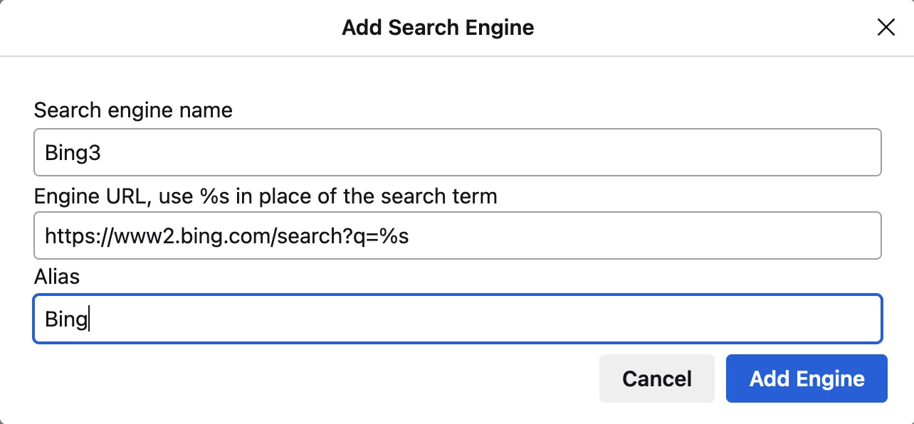

之前介绍过Brave浏览器安全配置，鉴于Google公司在Chromium项目中经常作妖，用户可以考虑使用LibreWolf浏览器。LibreWolf浏览器是一款基于Firefox的浏览器，安全性与隐私性不弱于Brave浏览器。可参考privacytests.org浏览器测评。
LibreWolf 浏览器安装
$ brew install --cask librewolf
由于LibreWolf浏览器开发者没有购买开发者证书，因此使用前需要在终端授权。
$ xattr -cr /Applications/LibreWolf.app
也可以一步到位安装：
brew install librewolf --no-quarantine
LibreWolf 浏览器设置
LibreWolf浏览器基本上与Firefox一致，唯独在设置中增加LibreWolf选项。

LibreWolf浏览器可以通过about:config来配置，另外也能通过修改配置文件librewolf.overrides.cfg来覆盖配置内容。
librewolf.overrides.cfg配置文件默认不存在，如需使用需要手动创建：
$ mkdir $HOME/.librewolf
$ touch $HOME/.librewolf/librewolf.overrides.cfg
大致内容，按需修改：
//Enable letterboxing
defaultPref("privacy.resistFingerprinting.letterboxing", true);
//Limit cross-origin referers
defaultPref("network.http.referer.XOriginPolicy", 2);
//disable WebGL
defaultPref("webgl.disabled", true);
一些实用的设置：
about:config
browser.search.openintab, true
browser.urlbar.openintab false
ui.prefersReducedMotion=0
LibreWolf Jun 17, 2025浏览器管理
安装扩展
官方建议尽可能少安装扩展，因为额外的扩展可能增加你的攻击面。
- uBlockOrigin https://github.com/gorhill/uBlock；
- Canvas Blocker https://addons.mozilla.org/en-US/firefox/addon/canvasblocker；
其他拓展可参考网络安全手册。
更新LibreWolf
brew update && brew upgrade
添加搜索引擎
LibreWolf添加搜索引擎方式与Firefox相同：点击搜索框中的绿色加号，按指引操作即可。如果工具栏没有搜索框，可以右键点击工具栏，选择自定义工具栏，再将搜索栏拖放到需要的位置。

部分搜索引擎不会弹出绿色加号，例如Bing https://www2.bing.com，可以进入设置手动添加。

其他问题
- "SSL_ERROR_UNSAFE_NEGOTIATION"：修改
security.ssl.require_safe_negotiation为false； - "SEC_ERROR_OCSP_SERVER_ERROR"：在设置LibreWolf首选项中取消勾选
Enforce OCSP hard-fail。
参考资料
- Privacy-settings https://github.com/StellarSand/privacy-settings
- LibreWolf浏览器官网 https://librewolf.net
- 干净简洁的浏览器，LibreWolf软件体验 https://post.smzdm.com/p/ag5d8e9w
- 纠结了很久 Chrome 和 Arc，最终选择了 Librewolf https://sspai.com/post/85096